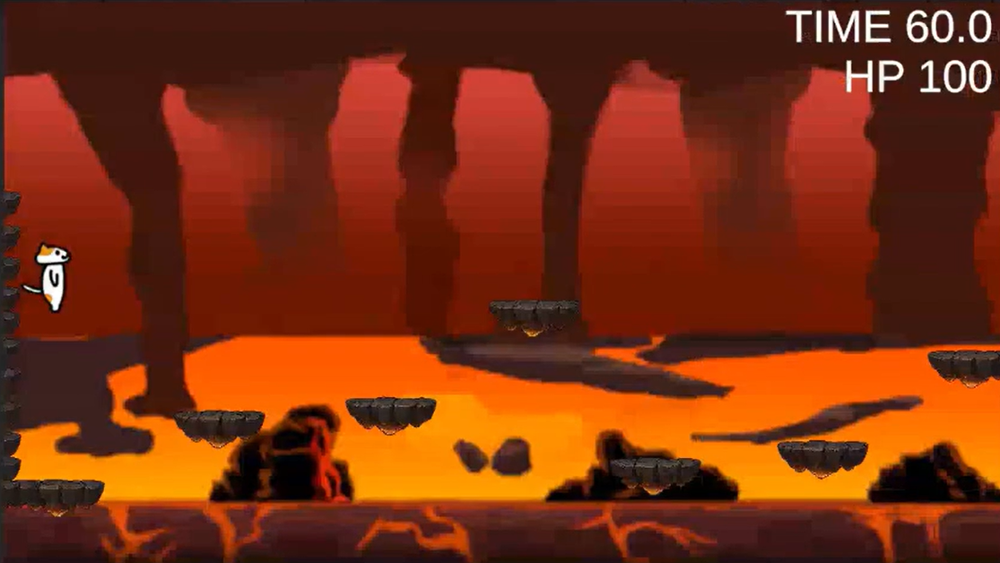
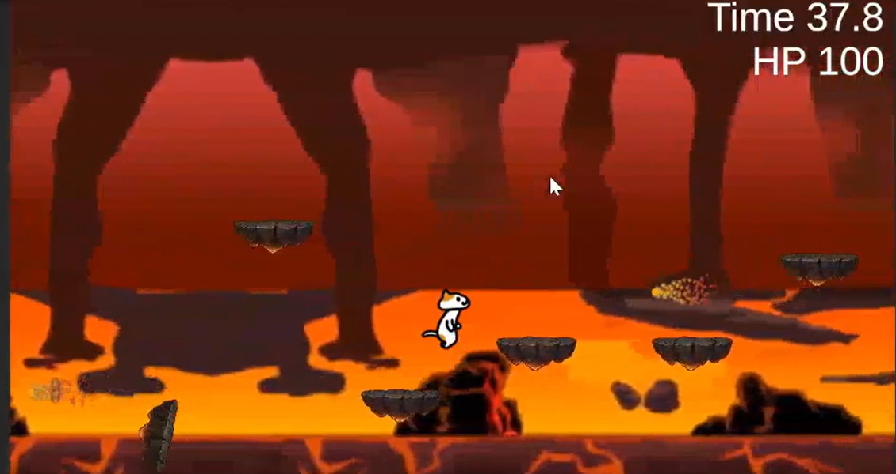
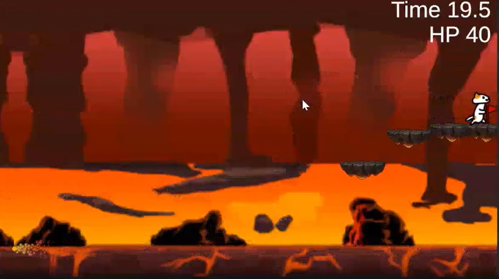
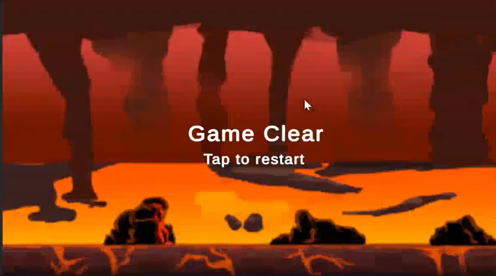
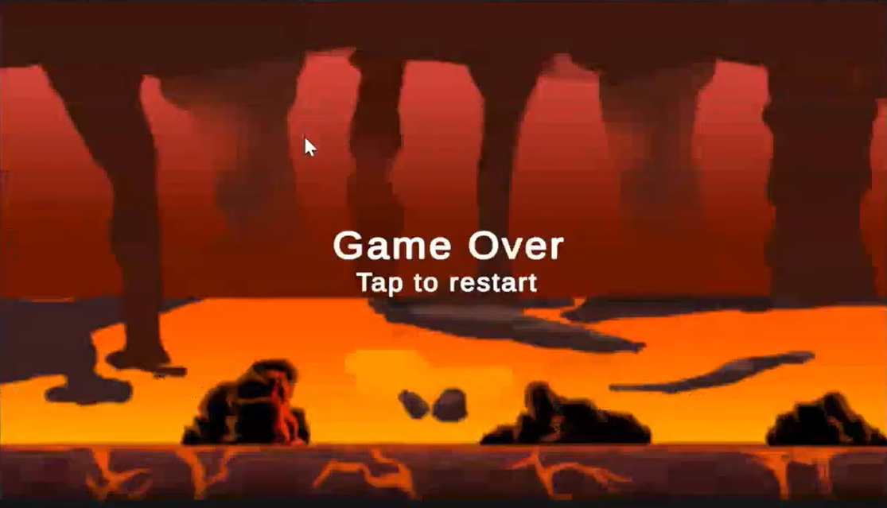

프로젝트 소개
본 프로젝트는 HCI사이언스 복수전공 과목인 VR/AR1의 개인 과제로 제작된 미니 게임입니다.
한 학기 동안 학습한 게임 설계 프로세스를 실제 개발 현장에 적용해 보는 것을 핵심 목표로 삼았으며, 초기 기획 단계부터 교수님의 피드백을 수렴하여 기능적·공간적 완성도를 높이는 데 집중했습니다.

주요 개발 로직 & Evolution
#1. 가변 난이도 시스템
초기 기획의 '속도 증가'를 넘어, 남은 시간에 따라 불덩이 생성 주기(Span)를 유동적으로 조절하여 게임 후반부의 긴장감을 극대화했습니다.
#2. 지연 낙하 브릿지
코루틴을 활용해 3초의 유예 시간을 부여함으로써, 플레이어가 무작정 달리는 것이 아닌 전략적인 이동 타이밍을 고민하도록 설계했습니다.
#3. BGM 싱글톤 패턴
씬 전환 시에도 배경음이 끊기지 않도록 싱글톤 패턴과 DontDestroyOnLoad를 결합하여 사용자 경험의 연속성을 확보했습니다.
교수님 피드백 반영
-
씬 전환 시스템 구축
SceneManager를 활용한 메인/오버/클리어 전환 -
공간적 몰입감 강화
징검다리 높낮이 조절 및 프리팹을 이용한 배치 -
상황별 사운드 연출
AudioSource 컴포넌트를 이용한 효과음 추가
어려움 및 문제 해결
# 불덩이 파티클 방향 오류
날아오는 불덩이 파티클 방향이 의도와 정반대로 설정된 현상
파티클 옵션 수치 조정 및 실시간 플레이 테스트 반복으로 최적의 각도 도출
# 카메라 트래킹 예외 처리
플레이어가 시작 직후 반대 방향으로 추락 시 카메라 제어 이탈
돌다리 벽(Collider)을 물리적으로 배치하여 이동 반경을 시스템적으로 제약
주요 프로젝트 자료 & Documentation
게임 플레이 시연 영상
초기 프로젝트 기획안
Plan View
상세보기를 위해 클릭해주세요
최종 결과 보고서
Final Report
상세보기를 위해 클릭해주세요
In-game Gallery
01. 메인 타이틀
사용자 경험(UX)을 고려해 직관적으로 설계한 메인 시작 스크린

02. 실시간 플레이
유기적인 물리 엔진과 장애물 생성이 조화된 핵심 게임 스테이지

03. 목표 지점 도달
트리거를 활용한 승리 조건 판정 및 클리어 시퀀스 연결

04. 미션 성공
플레이 결과에 대한 성취감을 고취하는 결과 UI 연출

05. 미션 실패
직관적인 피드백을 통해 재도전 욕구를 자극하는 게임 오버 화면
마무리하며
이번 프로젝트는 유니티를 심도 있게 학습하며 개발한 저의 첫 번째 도전이었습니다. 단순한 기능 구현을 넘어, 체계적인 게임 설계와 스크립트 분리가 실제 개발 효율에 미치는 영향을 깊이 깨닫는 계기가 되었습니다.
특히 목적에 맞는 철저한 파일 관리 프로세스를 정립한 덕분에 실제 개발 시간을 획기적으로 단축할 수 있었고, 그렇게 확보한 시간을 버그 수정과 연출 고도화에 투자하여 전공 수업 A+라는 값진 성과를 도출해낼 수 있었습니다.
"지속적인 학습을 통해 어떤 환경에서도 목적에 최적화된 기능을 구현해내는 역량 있는 개발자가 되겠습니다."